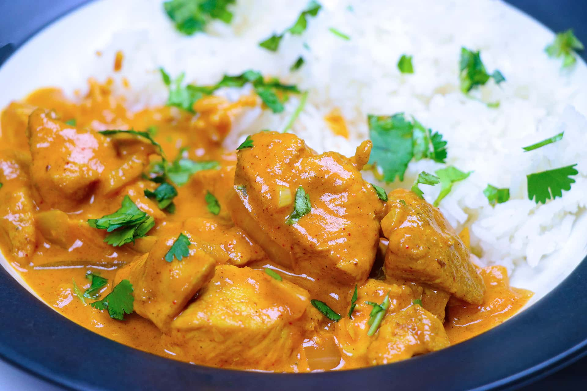

Easy butter chicken
Steps for making Butter chiken
- Marinate the Chicken:
- In a bowl, combine the yogurt, ginger garlic paste, red chili powder, turmeric powder, garam masala, and salt.
- Add the chicken pieces to the marinade, ensuring they are well-coated. Cover and refrigerate for at least 30 minutes, or ideally, a few hours.
-
Cook the Chicken:
- Heat a pan over medium-high heat and add a little oil.
- Add the marinated chicken pieces and cook until they are browned and cooked through. Set aside.
-
Prepare the Tomato Sauce:
- In the same pan, melt 2 tablespoons of butter.
- Place a spoonful of the cooled vegetable filling in the center of the dough circle.Add finely chopped onions and sauté until they become translucent.
-
Add Aromatics:
- Stir in minced garlic and ginger, and sauté for a few more minutes until fragrant.
-
Add Tomato Base:
- Add the crushed tomatoes, red chili powder, turmeric powder, and garam masala.
- Cook the sauce over medium heat for about 10-15 minutes, stirring occasionally, until it thickens and the butter starts to separate.
]
- Blend the Sauce:
- Allow the sauce to cool slightly, then use a blender or an immersion blender to puree it until smooth.
.
- Finish the Dish:
- Return the blended sauce to the pan.
.
- Add the cooked chicken pieces and simmer for another 10 minutes, allowing the flavors to meld.